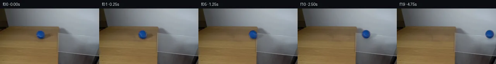
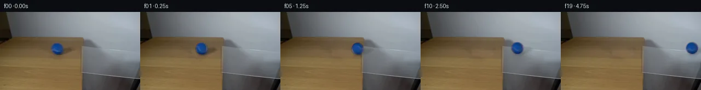
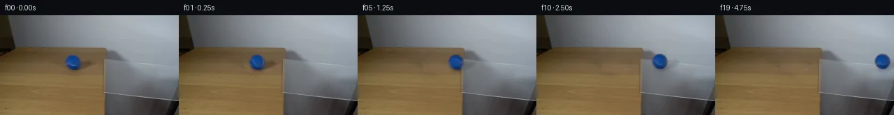
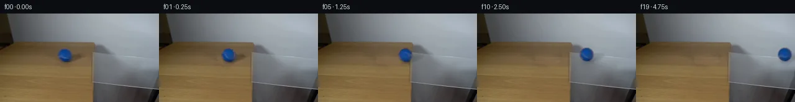
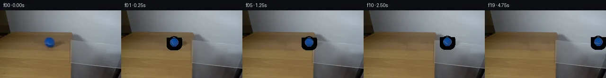
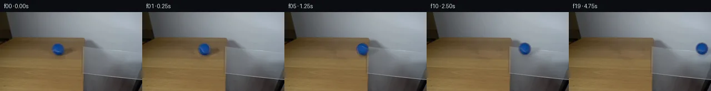
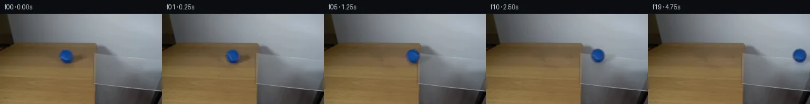
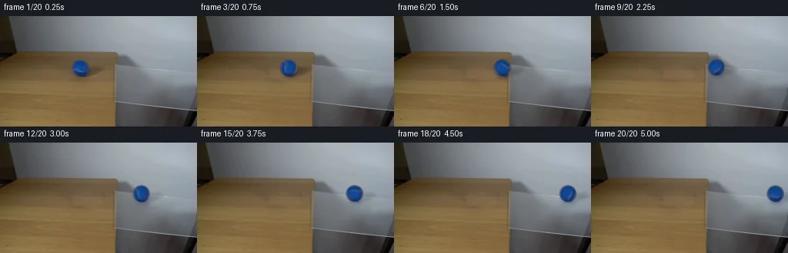
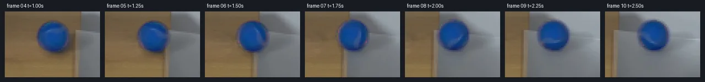

V0 · 初版
2026-11-05T10:06:06.624065+00:00 · RGB dc80259a60f5
![]()
Observable Generation Trace
把最终像素视频、Harness 冻结的每轮候选、真实工具事件和 Agent 自述放在同一页。可观测证据与模型自述分开标记，避免把“模型说它检查过”误当成真实工具调用。
![首帧]()
Static locked-off single-shot with fixed frame throughout filmed with constant framerate in real-time. The scene shows a realistic scientific demonstration. The scene only contains the described setup and actions. A piece of clear glass resting on the edge of a light-colored wooden table against a plain white wall. The blue tennis ball rolls from the wooden table over the glass.
首帧显示在左侧播放器初始画面。Track 权限、隔离和 tensor 一致性来自 run manifest，而不是 METHOD.md。
默认勾选初版和最终版；可选其他版本一起同步播放。仅检查图更新的连续重复快照已合并，回退旧视频仍保留为一次修订。
Observable events
来源：events.jsonl + run manifest
此 Track 禁止读取输出图片。逐轮预览由外部 Harness 自动冻结，只用于事后审计，生成 Agent 当时看不到这些页面。
Frozen candidates
每张图来自该 round 的真实 00 / 01 / 05 / 10 / 19 帧

pixels 9579f5da73a3d3ba · code 86bed701509d5477
--- previous/generate.py
+++ current/generate.py
@@ -0,0 +1,462 @@
+"""
+PixelWorld-Text case_0026.
+
+A blue tennis ball rolls from a light wooden table over a clear glass pane
+that rests at the table edge. Locked-off camera, static background, 20 frames
+at 256x144 / 4 fps.
+
+Method (local pixel operations + analytic physics only):
+ 1. Build a clean static background by inpainting the ball + its shadow in
+ frame 0 with a same-row donor strip taken 46 px to the left (horizontal
+ wood grain therefore aligns), corrected by a per-row fitted linear
+ lateral lighting gradient, feathered at the mask edge.
+ 2. Un-mix the ball foreground sprite from frame 0 with a geometric
+ anti-aliased circular alpha. The sprite is split into a fixed radial
+ sphere shading table S(d) x directional multiplier (world-fixed
+ lighting, fitted per channel) and a ROTATING signed texture deviation
+ fg/S - 1: the tennis-ball seam is a dark groove flanked by pale raised
+ bars (red-channel deviations from about -0.6 to +1.6).
+ 3. Extract the ball's ground shadow directly from frame 0 as a per-channel
+ multiplicative factor field (un-mixed under the silhouette fringe with
+ the modelled ball colour), denoised and stored as a stamp relative to
+ the ball centre; on the glass the stamp fades to a neutral half-strength
+ shadow, and a faint blue mirror reflection is added.
+ 4. Render frames 1..19: near-constant-speed rolling with tiny deceleration,
+ clockwise spin (rolling without slipping), a ~1 px climb when crossing
+ the glass rim, empirical shadow stamp and glass reflection. A small
+ world-fixed rim-colour correction measured at pose 0 finishes the
+ anti-aliased silhouette fringe.
+ 5. Frame 00 is copied byte-for-byte from first_frame.png.
+
+Run: python3 generate.py
+"""
+from pathlib import Path
+import numpy as np
+from PIL import Image, ImageDraw, ImageFilter
+import artifact_io
+
+WS = Path(__file__).parent
+FIRST = np.array(Image.open(WS / "first_frame.png").convert("RGB"))
+H, W, _ = FIRST.shape
+assert (H, W) == (144, 256)
+
+# ---------------------------------------------------------------- geometry --
+CX0, CY0, R_OUT = 104.5, 67.6, 12.3 # ball centre, sprite extent
+ROLL_R = 10.9 # rolling radius
+
+# coverage profile fitted by least-squares un-mixing of the frame-0 rim
+# (solid core to d~10, wide faint anti-aliased fringe to d~12.2)
+_A_D = np.arange(0.0, 12.31, 0.1)
+_A_V = np.interp(_A_D,
+ [0., 9.8, 10.0, 10.2, 10.4, 10.6, 10.8, 11.0, 11.2, 11.4, 11.6, 11.8, 12.0, 12.2, 12.3],
+ [1., 1., 1.00, 0.88, 0.68, 0.54, 0.38, 0.28, 0.27, 0.18, 0.14, 0.11, 0.06, 0.00, 0.0])
+
+def ball_alpha(dd):
+ return np.interp(dd, _A_D, _A_V)
+
+RIM_X = 151.5 # wood/glass boundary (px)
+WOOD_X0, WOOD_X1, WOOD_Y0 = 10, 148, 49 # clean-wood fit region
+DONOR_DX = -46 # horizontal donor shift
+
+# ---------------------------------------------------------------- 1. wood bg -
+def build_background():
+ yy, xx = np.mgrid[0:H, 0:W]
+ # hard mask of ball + cast shadow + contact shadow
+ e_ball = ((xx - 104.5) / 12.6) ** 2 + ((yy - 67.6) / 12.0) ** 2
+ e_cast = ((xx - 116.0) / 18.0) ** 2 + ((yy - 73.0) / 11.0) ** 2
+ e_contact = ((xx - 105.0) / 12.5) ** 2 + ((yy - 78.0) / 4.2) ** 2
+ hard = ((e_ball < 1.0) | (e_cast < 1.0) | (e_contact < 1.0))
+ # feathered weight: opaque inside the hard mask, soft Gaussian tail outside
+ blur = np.asarray(
+ Image.fromarray((hard * 255).astype(np.uint8)).filter(ImageFilter.GaussianBlur(2.2))
+ ).astype(float) / 255.0
+ weight = np.where(hard, 1.0, np.minimum(blur, 0.45))
+
+ donor = FIRST.astype(float).copy()
+ for y in range(WOOD_Y0, H):
+ xs = np.arange(WOOD_X0, WOOD_X1)
+ keep = ~hard[y, WOOD_X0:WOOD_X1]
+ A = np.polyfit(xs[keep], FIRST[y, WOOD_X0:WOOD_X1][keep].astype(float), 1)
+ line = lambda q: q[:, None] * A[0][None, :] + A[1][None, :]
+ for x in range(86, 140):
+ d = np.array([x, x + DONOR_DX], dtype=float)
+ donor[y, x] = FIRST[y, x + DONOR_DX].astype(float) + (line(d[:1]) - line(d[1:]))[0]
+
+ bg = FIRST.astype(float) * (1 - weight[..., None]) + donor * weight[..., None]
+ return bg, hard, weight
+
… diff truncated; 375 more lines …pixels 9579f5da73a3d3ba · code 4f839de204573b6d
--- previous/generate.py
+++ current/generate.py
@@ -455,7 +455,8 @@
cx, cy, _ = trajectory(t)
print(f"[check] frame {t:02d}: changed={n:5d} cx={cx:6.2f} cy={cy:5.2f}")
ys, xs = np.where(packed[t] != packed[0])
- assert xs.min() > cx - 32 and xs.max() < cx + 40 and ys.min() > 48
+ # differences span both the vacated pose-0 spot and the current spot
+ assert xs.min() >= 88 and xs.max() < cx + 40 and 48 < ys.min() and ys.max() < 100
print("[check] all assertions passed")
if __name__ == "__main__":
pixels a1429926036ad8b0 · code 7daddc7a4e33bc9f
--- previous/generate.py
+++ current/generate.py
@@ -54,9 +54,14 @@
def ball_alpha(dd):
return np.interp(dd, _A_D, _A_V)
-RIM_X = 151.5 # wood/glass boundary (px)
-WOOD_X0, WOOD_X1, WOOD_Y0 = 10, 148, 49 # clean-wood fit region
+# wood/glass seam at the ball's contact level is the dark 2 px strip at
+# x ~147-148; higher up, the pane edge recedes diagonally to ~x156 at y62
+WOOD_X0, WOOD_X1, WOOD_Y0 = 10, 146, 49 # clean-wood fit region
DONOR_DX = -46 # horizontal donor shift
+
+def glass_edge_x(y):
+ """x coordinate of the wood/glass boundary as a function of row y."""
+ return 147.5 + np.clip((70.0 - y) / 15.0, 0.0, 1.0) * 8.0
# ---------------------------------------------------------------- 1. wood bg -
def build_background():
@@ -273,7 +278,7 @@
# ------------------------------------------------------- 4. rendering --------
def trajectory(t):
cx = CX0 + 7.35 * t - 0.0125 * t * t
- q = np.clip((t - 6.3) / (8.6 - 6.3), 0, 1)
+ q = np.clip((t - 5.7) / (7.7 - 5.7), 0, 1)
q = q * q * (3 - 2 * q) # smoothstep
cy = CY0 - 1.0 * q # climb onto the pane
path = 7.35 * t - 0.0125 * t * t
@@ -290,7 +295,8 @@
bx1, by1 = min(W, int(cx + 36)), min(H, int(cy + 30))
ys, xs = np.mgrid[by0:by1, bx0:bx1].astype(float)
ys += 0.5; xs += 0.5
- wg = np.clip((xs - (RIM_X - 1.2)) / 2.4, 0, 1) # glass weight at the rim
+ edge = glass_edge_x(ys) # seam x at each row
+ wg = np.clip((xs - (edge - 1.0)) / 2.0, 0, 1) # glass weight over seam
wg = wg * wg * (3 - 2 * wg)
ww = 1 - wg
pixels a1429926036ad8b0 · code 7daddc7a4e33bc9f
No generate.py text change in this frozen round.

pixels 4b78e54dbd4506d6 · code 796badafd7737341
--- previous/generate.py
+++ current/generate.py
@@ -54,6 +54,21 @@
def ball_alpha(dd):
return np.interp(dd, _A_D, _A_V)
+def gblur(a, sigma):
+ """Separable Gaussian blur for float 2-D / 3-D arrays (zero padding)."""
+ r = max(1, int(np.ceil(3.0 * sigma)))
+ x = np.arange(-r, r + 1)
+ k = np.exp(-0.5 * (x / sigma) ** 2); k /= k.sum()
+ pad = [(r, r), (r, r)] + [(0, 0)] * (a.ndim - 2)
+ cur = np.pad(a.astype(float), pad, mode="constant")
+ for axis in (0, 1):
+ acc = np.zeros_like(cur)
+ for i, w in enumerate(k):
+ acc += w * np.roll(cur, i - r, axis=axis)
+ cur = acc
+ sl = tuple(slice(p0, s - p1) for (p0, p1), s in zip(pad, cur.shape))
+ return cur[sl]
+
# wood/glass seam at the ball's contact level is the dark 2 px strip at
# x ~147-148; higher up, the pane edge recedes diagonally to ~x156 at y62
WOOD_X0, WOOD_X1, WOOD_Y0 = 10, 146, 49 # clean-wood fit region
@@ -166,23 +181,16 @@
# well conditioned (alpha > 0.5); sparse fringe extension lets the seam
# rotate onto/out of the silhouette edge.
tmask = alpha > 0.50
- dev = np.clip(fg / np.maximum(S, 1e-3) - 1.0, -0.7, 2.0)
fringe_t = (alpha > 0.22) & ~tmask
- fdev = np.clip(fg / np.maximum(S, 1e-3) - 1.0, -0.7, 2.0)
- fdev[~fringe_t] = 0
- # sparsify: fringe deviation survives only where strong (the seam itself)
- fdev = np.where(np.abs(fdev).max(2, keepdims=True) > 0.17, fdev, 0.0)
- dev[fringe_t] = fdev[fringe_t]
- # signed values cannot go straight into uint8: encode around 128
- tmask2 = tmask | fringe_t
- enc = np.clip(np.rint(dev * 96.0 + 128.0), 0, 255)
- da = np.concatenate([enc, tmask2[..., None].astype(float) * 255.0], axis=-1)
- da_img = Image.fromarray(da.astype(np.uint8), mode="RGBA").filter(
- ImageFilter.GaussianBlur(0.8))
- da_f = np.asarray(da_img).astype(float)
- cov = np.maximum(da_f[..., 3:4] / 255.0, 1e-3)
- dev = np.clip((da_f[..., :3] - 128.0) / 96.0 / cov, -0.7, 2.0)
- dev[~tmask2] = 0
+ dev = np.clip(fg / np.maximum(S, 1e-3) - 1.0, -0.7, 2.2)
+ m = tmask | fringe_t
+ dev[~m] = 0
+ # sparsify the fringe: deviation survives only where strong (seam edge)
+ dev[fringe_t & (np.abs(dev).max(2) <= 0.17)] = 0
+ num = gblur(np.where(m[..., None], dev, 0.0), 0.8)
+ den = np.maximum(gblur(m.astype(float), 0.8), 1e-3)[..., None]
+ dev = np.clip(num / den, -0.7, 2.2)
+ dev[~m] = 0
dev = np.where(np.abs(dev).max(2, keepdims=True) > 0.13, dev, 0.0)
modelled = np.clip(S * (1 + dev), 0, 255)
@@ -235,14 +243,10 @@
# wood-grain noise does not travel with the stamp
dark = np.clip(1.0 - fac, 0, 1)
sig = dark.mean(2)
- sig_b = np.asarray(Image.fromarray((sig * 255).astype(np.uint8)).filter(
- ImageFilter.GaussianBlur(1.1))).astype(float) / 255.0
+ sig_b = gblur(sig, 1.1)
gate = np.clip((sig_b - 0.035) / 0.045, 0, 1)
gate = gate * gate * (3 - 2 * gate)
- dark_b = np.stack([
- np.asarray(Image.fromarray((dark[..., c] * 255).astype(np.uint8)).filter(
- ImageFilter.GaussianBlur(1.1))).astype(float) / 255.0
- for c in range(3)], -1)
+ dark_b = gblur(dark, 1.1)
stamp = 1.0 - dark_b * gate[..., None]
stamp[dd < 9.8] = 1.0
stamp = np.where(inwin[..., None], stamp, 1.0)
@@ -385,16 +389,11 @@
dd = np.hypot(xx + 0.5 - CX0, yy + 0.5 - CY0)
res = FIRST.astype(float) - model0.astype(float)
gate0 = ((dd > 9.7) & (dd < 12.4)).astype(float)
- rg = np.asarray(Image.fromarray((gate0 * 255).astype(np.uint8)).filter(
- ImageFilter.GaussianBlur(0.7))).astype(float) / 255.0
- chans = []
- for c in range(3):
- v8 = np.clip(np.rint(res[..., c] + 128.0), 0, 255).astype(np.uint8)
- b = np.asarray(Image.fromarray(v8).filter(
- ImageFilter.GaussianBlur(0.9))).astype(float) - 128.0
- chans.append(b)
- corr = np.concatenate([chans[0][..., None], chans[1][..., None],
- chans[2][..., None], rg[..., None]], -1)
+ rg = gblur(gate0, 0.7)
+ # coverage-weighted blur of the residual keeps colours honest at the edge
… diff truncated; 6 more lines …pixels 74bfcc8836612c3c · code 768803583820e414
--- previous/generate.py
+++ current/generate.py
@@ -182,16 +182,21 @@
# rotate onto/out of the silhouette edge.
tmask = alpha > 0.50
fringe_t = (alpha > 0.22) & ~tmask
- dev = np.clip(fg / np.maximum(S, 1e-3) - 1.0, -0.7, 2.2)
+ raw = np.clip(fg / np.maximum(S, 1e-3) - 1.0, -0.7, 2.2)
m = tmask | fringe_t
- dev[~m] = 0
- # sparsify the fringe: deviation survives only where strong (seam edge)
- dev[fringe_t & (np.abs(dev).max(2) <= 0.17)] = 0
- num = gblur(np.where(m[..., None], dev, 0.0), 0.8)
- den = np.maximum(gblur(m.astype(float), 0.8), 1e-3)[..., None]
+ raw[~m] = 0
+ raw[fringe_t & (np.abs(raw).max(2) <= 0.20)] = 0
+ # edge-preserving smooth: blur positive and negative deviations
+ # separately so the pale seam bars do not cancel the adjacent dark groove
+ tp = np.array([0.15, 0.10, 0.08]); tn = np.array([-0.15, -0.10, -0.08])
+ pos = np.where(raw > tp, raw, 0.0)
+ neg = np.where(raw < tn, raw, 0.0)
+ mc = (np.maximum(pos, -neg).sum(2) > 0).astype(float)
+ num = gblur(pos + neg, 0.8)
+ den = np.maximum(gblur(mc, 0.8), 0.55)[..., None]
dev = np.clip(num / den, -0.7, 2.2)
dev[~m] = 0
- dev = np.where(np.abs(dev).max(2, keepdims=True) > 0.13, dev, 0.0)
+ dev = np.where(np.abs(dev).max(2, keepdims=True) > 0.09, dev, 0.0)
modelled = np.clip(S * (1 + dev), 0, 255)
resid = np.abs(fg - modelled)[solid]pixels 74bfcc8836612c3c · code 768803583820e414
No generate.py text change in this frozen round.

pixels 25c3b88edd71fc55 · code c41ba0ea7f31c9b9
--- previous/generate.py
+++ current/generate.py
@@ -188,12 +188,12 @@
raw[fringe_t & (np.abs(raw).max(2) <= 0.20)] = 0
# edge-preserving smooth: blur positive and negative deviations
# separately so the pale seam bars do not cancel the adjacent dark groove
- tp = np.array([0.15, 0.10, 0.08]); tn = np.array([-0.15, -0.10, -0.08])
+ tp = np.array([0.18, 0.12, 0.10]); tn = np.array([-0.18, -0.12, -0.10])
pos = np.where(raw > tp, raw, 0.0)
neg = np.where(raw < tn, raw, 0.0)
mc = (np.maximum(pos, -neg).sum(2) > 0).astype(float)
- num = gblur(pos + neg, 0.8)
- den = np.maximum(gblur(mc, 0.8), 0.55)[..., None]
+ num = gblur(pos + neg, 0.55)
+ den = np.maximum(gblur(mc, 0.55), 0.55)[..., None]
dev = np.clip(num / den, -0.7, 2.2)
dev[~m] = 0
dev = np.where(np.abs(dev).max(2, keepdims=True) > 0.09, dev, 0.0)pixels e2165a1d984ecd92 · code bae940952d76e8bf
--- previous/generate.py
+++ current/generate.py
@@ -186,17 +186,12 @@
m = tmask | fringe_t
raw[~m] = 0
raw[fringe_t & (np.abs(raw).max(2) <= 0.20)] = 0
- # edge-preserving smooth: blur positive and negative deviations
- # separately so the pale seam bars do not cancel the adjacent dark groove
- tp = np.array([0.18, 0.12, 0.10]); tn = np.array([-0.18, -0.12, -0.10])
- pos = np.where(raw > tp, raw, 0.0)
- neg = np.where(raw < tn, raw, 0.0)
- mc = (np.maximum(pos, -neg).sum(2) > 0).astype(float)
- num = gblur(pos + neg, 0.55)
- den = np.maximum(gblur(mc, 0.55), 0.55)[..., None]
- dev = np.clip(num / den, -0.7, 2.2)
+ # the seam is only 1-2 px wide; any blur smears the pale bar into the
+ # dark groove, so keep per-pixel deviations and sparsify sub-threshold
+ # noise instead (render-time rotation + bilinear sampling smooths it)
+ floors = np.array([0.16, 0.11, 0.09])
+ dev = np.where(np.abs(raw) > floors, raw, 0.0)
dev[~m] = 0
- dev = np.where(np.abs(dev).max(2, keepdims=True) > 0.09, dev, 0.0)
modelled = np.clip(S * (1 + dev), 0, 255)
resid = np.abs(fg - modelled)[solid]
@@ -339,6 +334,18 @@
n = sp["dev"].shape[0]
acc_a = np.zeros_like(oxs)
acc_rgb = np.zeros(oxs.shape + (3,))
+ # texture is 1-2 px wide: sample it at the pixel centre (bilinear in the
+ # rotated frame) rather than averaging it over the coverage jitter grid
+ pcx, pcy = oxs + 0.5 - cx, oys + 0.5 - cy
+ qx = cth * pcx + sth * pcy
+ qy = -sth * pcx + cth * pcy
+ gx = np.clip(qx + (CX0 - sp["x0"]), 0, n - 1.001)
+ gy = np.clip(qy + (CY0 - sp["y0"]), 0, n - 1.001)
+ xA = np.floor(gx).astype(int); yA = np.floor(gy).astype(int)
+ fx = (gx - xA)[..., None]; fy = (gy - yA)[..., None]
+ D = sp["dev"]
+ Dv = (D[yA, xA] * (1 - fx) * (1 - fy) + D[yA + 1, xA] * (1 - fx) * fy +
+ D[yA, xA + 1] * fx * (1 - fy) + D[yA + 1, xA + 1] * fx * fy)
jit = np.array([(-1, -1), (0, -1), (1, -1), (-1, 0), (0, 0), (1, 0),
(-1, 1), (0, 1), (1, 1)], float) / 4.0
for jx, jy in jit:
@@ -346,16 +353,6 @@
ppy = oys + 0.5 + jy - cy
dd = np.hypot(ppx, ppy)
a = ball_alpha(dd)
- # inverse rotation maps the output offset back into source coords
- qx = cth * ppx + sth * ppy
- qy = -sth * ppx + cth * ppy
- gx = np.clip(qx + (CX0 - sp["x0"]), 0, n - 1.001)
- gy = np.clip(qy + (CY0 - sp["y0"]), 0, n - 1.001)
- xA = np.floor(gx).astype(int); yA = np.floor(gy).astype(int)
- fx = (gx - xA)[..., None]; fy = (gy - yA)[..., None]
- D = sp["dev"]
- Dv = (D[yA, xA] * (1 - fx) * (1 - fy) + D[yA + 1, xA] * (1 - fx) * fy +
- D[yA, xA + 1] * fx * (1 - fy) + D[yA + 1, xA + 1] * fx * fy)
Srad = shade_at(dd, sp["table"], sp["radii"])
nxv, nyv = ppx / 11.2, ppy / 11.2
zv = np.sqrt(np.maximum(0.0, 1 - np.clip(dd / 11.2, 0, 1) ** 2))pixels e2165a1d984ecd92 · code bae940952d76e8bf
No generate.py text change in this frozen round.

pixels 57d9031101c0bf7e · code 87dca232070285d2
--- previous/generate.py
+++ current/generate.py
@@ -112,7 +112,7 @@
x0, y0 = int(CX0) - PAD, int(CY0) - PAD
x1, y1 = x0 + 2 * PAD + 1, y0 + 2 * PAD + 1
lys, lxs = np.mgrid[y0:y1, x0:x1]
- px, py = (lxs - CX0).astype(float), (lys - CY0).astype(float)
+ px, py = lxs + 0.5 - CX0, lys + 0.5 - CY0
d = np.hypot(px, py)
alpha = ball_alpha(d)
a3 = alpha[..., None]
@@ -339,8 +339,8 @@
pcx, pcy = oxs + 0.5 - cx, oys + 0.5 - cy
qx = cth * pcx + sth * pcy
qy = -sth * pcx + cth * pcy
- gx = np.clip(qx + (CX0 - sp["x0"]), 0, n - 1.001)
- gy = np.clip(qy + (CY0 - sp["y0"]), 0, n - 1.001)
+ gx = np.clip(qx - sp["px"][0, 0], 0, n - 1.001)
+ gy = np.clip(qy - sp["py"][0, 0], 0, n - 1.001)
xA = np.floor(gx).astype(int); yA = np.floor(gy).astype(int)
fx = (gx - xA)[..., None]; fy = (gy - yA)[..., None]
D = sp["dev"]pixels 57d9031101c0bf7e · code 87dca232070285d2
No generate.py text change in this frozen round.

pixels c383cd6c9bd5a941 · code c48912516e649d88
--- previous/generate.py
+++ current/generate.py
@@ -145,10 +145,16 @@
continue
med = np.median(cols, axis=0)
keep = np.all(np.abs(cols - med) < 22, axis=1) # drop seam outliers
- table[i] = np.median(cols[keep], axis=0)
- # fill the innermost rings (window centre lands between pixels)
+ table[i] = (np.median(cols[keep], axis=0)
+ if keep.sum() >= 3 else table[i - 1])
+ # fill the innermost rings (window centre lands between pixels) and any
+ # other empty ring by nearest-neighbour propagation
first = np.flatnonzero(table.any(axis=1))[0]
table[:first] = table[first]
+ good = np.isfinite(table).all(1)
+ idx = np.arange(len(radii))
+ table = np.stack(
+ [np.interp(idx, idx[good], table[good, c]) for c in range(3)], 1)
# smooth the table a touch
k = np.array([1, 2, 3, 2, 1], float); k /= k.sum()
table = np.stack([np.convolve(table[:, c], k, mode="same") for c in range(3)], 1)pixels c383cd6c9bd5a941 · code c48912516e649d88
No generate.py text change in this frozen round.

pixels 13cadbf3a9856a5b · code 48c17d1a721d860a
--- previous/generate.py
+++ current/generate.py
@@ -138,13 +138,27 @@
table = np.zeros((len(radii), 3))
valid = alpha > 0.2
for i, rr in enumerate(radii):
- sel = valid & (np.abs(d - rr) < 0.32)
- cols = fg[sel]
+ tol = 0.32
+ cols = np.empty((0, 3))
+ if rr < 3.0:
+ # innermost rings have too few pixels and the seam groove can
+ # dominate; widen the annulus until enough clean samples
+ for tol in np.arange(0.32, 2.6, 0.25):
+ sel = valid & (np.abs(d - rr) < tol)
+ cols = fg[sel]
+ if len(cols) >= 12:
+ break
+ else:
+ sel = valid & (np.abs(d - rr) < tol)
+ cols = fg[sel]
if len(cols) < 5:
table[i] = table[i - 1]
continue
med = np.median(cols, axis=0)
keep = np.all(np.abs(cols - med) < 22, axis=1) # drop seam outliers
+ if keep.sum() >= 6 and rr < 3.0:
+ med = np.median(cols[keep], axis=0)
+ keep = np.all(np.abs(cols - med) < 22, axis=1)
table[i] = (np.median(cols[keep], axis=0)
if keep.sum() >= 3 else table[i - 1])
# fill the innermost rings (window centre lands between pixels) and anypixels 13cadbf3a9856a5b · code 48c17d1a721d860a
No generate.py text change in this frozen round.
pixels 24f848a60f1c939a · code b55cb04f17a40253
--- previous/generate.py
+++ current/generate.py
@@ -194,6 +194,41 @@
coef, *_ = np.linalg.lstsq(Km[keep], q[keep], rcond=None)
kdir[c] = coef
mult = np.clip(np.einsum("...j,cj->...c", K, kdir), 0.55, 1.45)
+
+ # joint refinement: once directional shading is known, re-estimate each
+ # radial ring from fg/mult, rejecting the seam groove/bars (large
+ # residuals); essential for the innermost rings the groove crosses
+ for _ in range(2):
+ implied = fg / np.clip(mult, 1e-3, None)
+ for i, rr in enumerate(radii):
+ tols = np.arange(0.32, 2.6, 0.25) if rr < 3.0 else np.array([0.32])
+ for tol in tols:
+ sel = valid & (np.abs(d - rr) < tol)
+ cols = implied[sel]
+ if len(cols) >= (12 if rr < 3.0 else 5):
+ break
+ if len(cols) < 5:
+ table[i] = table[i - 1]; continue
+ med = np.median(cols, 0)
+ keep = np.all(np.abs(cols - med) < 20, 1)
+ table[i] = np.median(cols[keep], 0) if keep.sum() >= 3 else med
+ good = np.isfinite(table).all(1)
+ idxf = np.arange(len(radii))
+ table = np.stack(
+ [np.interp(idxf, idxf[good], table[good, c]) for c in range(3)], 1)
+ table = np.stack([np.convolve(table[:, c], k, mode="same")
+ for c in range(3)], 1)
+ Srad = table[ri]
+ for c in range(3):
+ q = fg[..., c][solid] / Srad[..., c][solid]
+ Km = K[solid]
+ coef, *_ = np.linalg.lstsq(Km, q, rcond=None)
+ for _ in range(3):
+ rv = q - Km @ coef
+ keep = np.abs(rv) < max(2.5 * np.std(rv), 0.04)
+ coef, *_ = np.linalg.lstsq(Km[keep], q[keep], rcond=None)
+ kdir[c] = coef
+ mult = np.clip(np.einsum("...j,cj->...c", K, kdir), 0.55, 1.45)
S = Srad * mult
# rotating surface texture = SIGNED relative colour deviation (the seampixels 24f848a60f1c939a · code b55cb04f17a40253
No generate.py text change in this frozen round.
pixels 24f848a60f1c939a · code 33e39a2956ebf7c4
--- previous/generate.py
+++ current/generate.py
@@ -53,6 +53,12 @@
def ball_alpha(dd):
return np.interp(dd, _A_D, _A_V)
+
+def smooth1d(cols, k):
+ """1-D convolution with edge replication (np.convolve zero-pads)."""
+ p = len(k) // 2
+ padded = np.pad(cols, p, mode="edge")
+ return np.convolve(padded, k, mode="valid")
def gblur(a, sigma):
"""Separable Gaussian blur for float 2-D / 3-D arrays (zero padding)."""pixels 5d42107d93bb7444 · code c48937960cd9f422
--- previous/generate.py
+++ current/generate.py
@@ -177,7 +177,7 @@
[np.interp(idx, idx[good], table[good, c]) for c in range(3)], 1)
# smooth the table a touch
k = np.array([1, 2, 3, 2, 1], float); k /= k.sum()
- table = np.stack([np.convolve(table[:, c], k, mode="same") for c in range(3)], 1)
+ table = np.stack([smooth1d(table[:, c], k) for c in range(3)], 1)
# directional shading: key light from upper-left -> lower-right is darker.
# fit per-channel multiplier on features [1, nx, ny, z, contact-AO].
@@ -222,7 +222,7 @@
idxf = np.arange(len(radii))
table = np.stack(
[np.interp(idxf, idxf[good], table[good, c]) for c in range(3)], 1)
- table = np.stack([np.convolve(table[:, c], k, mode="same")
+ table = np.stack([smooth1d(table[:, c], k)
for c in range(3)], 1)
Srad = table[ri]
for c in range(3):Final visual checks
Harness 保存的最终产物


Agent claims
以下文字由生成 Agent 撰写，不等同于工具证据
All numbers below come from local Python/NumPy RGB inspection of
first_frame.png (256×144, RGB). No image viewing tool was used.
(Revised after implementation to record the final fitted geometry and
parameters; the measurements themselves are unchanged.)
glass_edge_x(y) = 147.5 + clip((70−y)/15, 0, 1)·8
(x ≈ 155.5 at y = 62, x ≈ 147.5 from y = 70 down).cx(t) = 104.5 + 7.35·t − 0.0125·t² (t = 0…19),
final cx = 239.6 (right edge of the sprite ~252, inside the frame on
the glass).q = smoothstep((t−5.7)/2)).θ(t) = (7.35·t − 0.0125·t²) / 10.9
rad. Screen coordinates are y-down, so positive θ reads as visual
clockwise — the correct spin for rightward travel; θ(19) ≈ 12.4 rad
(~1.97 turns). The sphere's lighting stays world-fixed; only the
felt/seam texture rotates. Measured cross-correlation of the annular
texture between frames gives an effective rotation rate ≈ 0.94 of the
analytic value.wg weight across a 2 px feather
of glass_edge_x) it fades to a neutral, half-strength shadow
(factor = 1 − (1−fwood)·ww − 0.50·dm·wg).0.15·exp(−(dxr/8.2)²)·clip(1−dyr/15, 0, 1)·wg, tint (44,74,126),
dyr measured from the contact line cy + 10.9 − 0.5.| t | time s | cx | cy | phase |
|---|---|---|---|---|
| 00 | 0.00 | 104.50 | 67.60 | exact first frame (byte-identical) |
| 01 | 0.25 | 111.84 | 67.60 | rolling on wood, clockwise spin, wood shadow |
| 02 | 0.50 | 119.15 | 67.60 | wood |
| 03 | 0.75 | 126.44 | 67.60 | wood; cast shadow nears seam |
| 04 | 1.00 | 133.70 | 67.60 | wood; shadow front crosses x≈147.5 |
| 05 | 1.25 | 140.94 | 67.60 | ball's right fringe reaches the seam |
| 06 | 1.50 | 148.15 | 67.54 | centre crosses seam; 1 px climb begins |
| 07 | 1.75 | 155.34 | 66.88 | ball straddles wood/glass; shadows blend |
| 08 | 2.00 | 162.50 | 66.60 | fully over glass; climb done; contact shadow + reflection |
| 09 | 2.25 | 169.64 | 66.60 | glass |
| 10 | 2.50 | 176.75 | 66.60 | glass |
| 11 | 2.75 | 183.84 | 66.60 | glass; crosses the specular streak |
| 12 | 3.00 | 190.90 | 66.60 | glass |
| 13 | 3.25 | 197.94 | 66.60 | glass |
| 14 | 3.50 | 204.95 | 66.60 | glass |
| 15 | 3.75 | 211.94 | 66.60 | glass |
| 16 | 4.00 | 218.90 | 66.60 | glass |
| 17 | 4.25 | 225.84 | 66.60 | glass |
| 18 | 4.50 | 232.75 | 66.60 | glass |
| 19 | 4.75 | 239.64 | 66.60 | glass; sprite right edge ~x252 |
DONOR_DX = −46, so horizontal wood
grain aligns), corrected by a per-row linear lateral-gradient fit over
x = 10…146 excluding masked pixels; fill region x = 86…139. All other
pixels stay byte-identical (verified: far-field diff 0).fg = (frame − (1−α)·bg)/α), decomposed into a radial ring-median
shading table × per-channel directional LS multiplier (features
[1, nx, ny, z, contact-AO]; iterated outlier rejection and two
joint-refinement passes) and a ROTATING signed per-pixel deviation
fg/S − 1 (the dark seam groove needs negative values; no blur —
blurring smeared the pale bar into the groove — sub-threshold noise is
sparsified with per-channel floors [0.16, 0.11, 0.09]).build_rim_correction, annulus-gated, blurred).first_frame.png (sha256 prefix
f2d5ae08dd907e26).Blue tennis ball rolling from a light wooden table over a clear glass pane.
20 frames, 256×144, 4 fps. Everything below is produced by generate.py
using only NumPy + Pillow local pixel operations and analytic geometry.
No external models, engines, network access, or reference images are used;
the only scene inputs are first_frame.png and prompt.txt.
The strategy is analysis of frame 0, then re-compositing: frame 0 is decomposed into (a) a static background, (b) a ball sprite split into world-fixed shading + rotating surface texture, and (c) a ground-shadow stamp. Frames 1–19 are rendered by moving and rotating those pieces; frame 00 is the original file, byte-for-byte.
ROLL_R = 10.9.α(d) is a hand-fitted 0.1-spaced lookup table
(ball_alpha): 1.0 to d = 9.8, then tapering through the anti-aliased
fringe to 0 at d ≈ 12.2. The fringe shape was fitted to the observed
frame-0 silhouette by least-squares un-mixing.glass_edge_x(y) = 147.5 + clip((70−y)/15, 0, 1)·8 — the dark 2 px
seam at x ≈ 147–148 on the contact rows, receding diagonally to
x ≈ 155.5 at y = 62.build_background)DONOR_DX = −46) so the horizontal wood grain aligns, plus the fitted
gradient difference between source and destination:
donor(x) = frame(x−46) + line(x) − line(x−46).extract_sprite)A 31×31 patch (PAD = 15) around the centre, with pixel-centre coordinates.
fg = (frame0 − (1−α)·bg) / max(α, 1e-3), clipped to [0, 255].smooth1d; np.convolve zero-padding had corrupted centre values).[1, nx, ny, z, contact-AO] with nx,ny = p/11.2,
z = √(1−(d/11.2)²), AO = clip((ny−0.28)/.72)²·(d/11.2)² (key
light upper-left, darker lower-right, plus a contact darkening).
Fit on solid pixels (α > 0.55) with three 2.5σ reweighted iterations;
multiplier clipped to [0.55, 1.45].fg / mult with seam rejection, interpolate/smooth, then refit the
directional coefficients — the ring medians and directional fit are
otherwise entangled where the groove crosses the inner rings.dev = clip(fg/S − 1, −0.7, 2.2). The seam is a 1–2 px dark groove
(negative, down to −0.70) flanked by pale raised bars (positive,
up to +2.16); a single-sided "darkening" map cannot represent it.
Deviations are kept for α > 0.50 plus a sparse fringe extension
(0.22 < α ≤ 0.50, kept only where |dev| > 0.20) so the seam can rotate
onto/out of the silhouette edge. No blur is applied — every blur
variant tested smeared the 1 px pale bar into the adjacent dark groove;
instead sub-threshold noise is sparsified per channel with floors
[0.16, 0.11, 0.09]. Render-time bilinear sampling after rotation
supplies the smoothing.
Fit quality at pose 0: |fg − S(1+dev)| median 1.45, p90 6.02.build_shadow_stamp)Rather than parametric ellipses, the actual ground shadow is measured
from frame 0 as a per-channel multiplicative factor frame0/bg:
(obs − α·ball/bg) / max(1−α, 0.12) where ball is the
modelled sprite colour. Factors are clipped to [0.2, 1.0]; inside
d < 9.8 the ground is invisible and forced to 1.1−fac is Gaussian-blurred (σ = 1.1 via a
hand-written separable float gblur) and gated by a blurred
significance map (smoothstep on mean darkening 0.035→0.08) so wood
grain does not travel with the stamp.sample_stamp). Stamp dark max 0.524; mean where >0.05 is 0.180.cx(t) = 104.5 + 7.35·t − 0.0125·t² (near-constant speed, tiny rolling
deceleration); cx(19) = 239.64.cy = 67.6 − smoothstep(clip((t−5.7)/2, 0, 1)), reaching 66.6 at
t ≥ 7.7.θ = path / 10.9 with
path = 7.35·t − 0.0125·t². Screen y is down, so with the rotation
convention used in the inverse map positive θ reads as visual
clockwise; θ(19) ≈ 12.4 rad ≈ 1.97 turns. Cross-correlation of the
annular texture between consecutive rendered frames puts the measured
spin at ≈ 0.94 of this analytic rate (the residual is the sparse,
quantised seam signature — see limitations).render_frame)Per frame, in a bounding box around the ball:
glass_edge_x(y): wg glass, ww = 1−wg wood.fwood from the stamp; mean darkening dm;
factor = 1 − (1−fwood)·ww − 0.50·dm·wg — full colour shadow on
wood, neutral half-strength shadow on clear glass; multiplied onto
the canvas.refl = 0.15·exp(−(dxr/8.2)²)·clip(1−dyr/15,0,1)·wg
(dyr from cy + 10.9 − 0.5), additively tinted with (44,74,126).qx = cosθ·px + sinθ·py, qy = −sinθ·px + cosθ·py), while colour
is accumulated over a 3×3 sub-pixel jitter grid (coverage averaged):
radial table via shade_at, directional multiplier recomputed per
jitter sample, colour clip(S·(1+Dv), 0, 255), alpha-composited over
the shadowed canvas.build_rim_correction): the pass-1
pose-0 residual frame0 − model inside the annulus 9.7 < d < 12.4 is
coverage-normalised, Gaussian-blurred (σ 0.7 gate / 0.9 residual) and
stored as an additive RGBA patch (world frame, not rotating). It is
bilinearly applied to every frame wherever coverage is non-zero,
correcting systematic fringe colour errors (e.g. a ≈ −11 blue bias on
some clean left-arc pixels) without touching the rotating seam.Frame 00 is assigned frames[0] = FIRST directly, so the saved PNG is
byte-identical to first_frame.png (asserted and hash-checked).
python3 generate.py writes pixels.npz (packed uint32 0xRRGGBB tensor,
(144,256,20) via artifact_io.save), frames/00.png…19.png,
inspection.png (8-frame contact sheet built by artifact_io),
transition_check.png (3× nearest-neighbour crops of frames 04–10 across
the rim), and index.html (standalone delta player).
Built-in pose-0 self-validation (rebuilt model vs first frame):
Final independent QC (.tmp/final_qc.py, numeric only):
frames/00.png byte-identical to first_frame.png
(sha256 f2d5ae08dd907e26…);